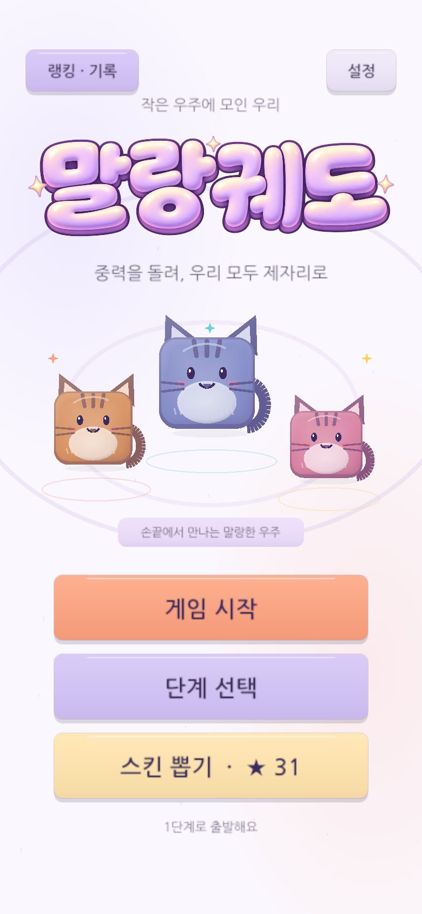
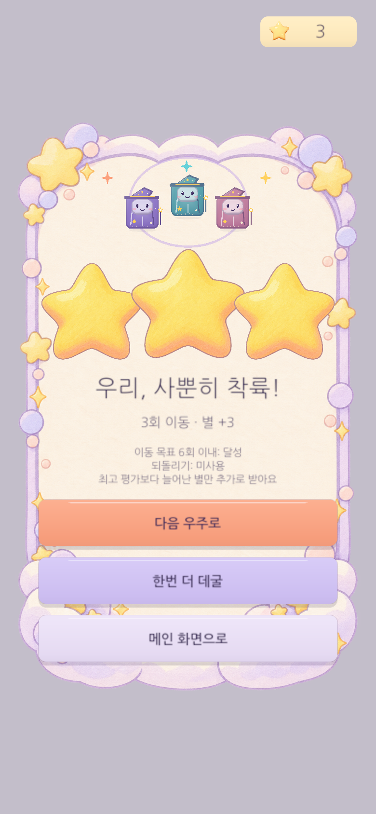
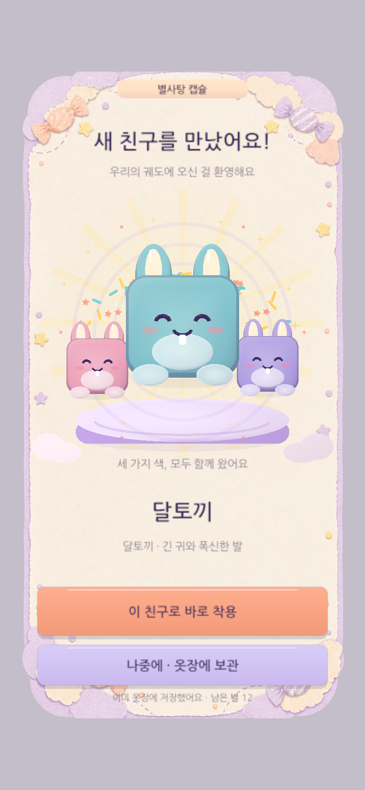
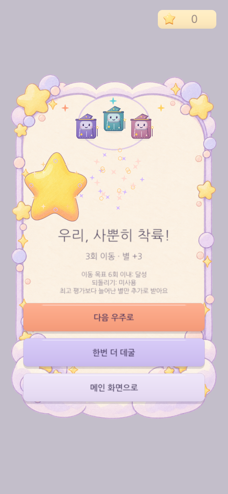
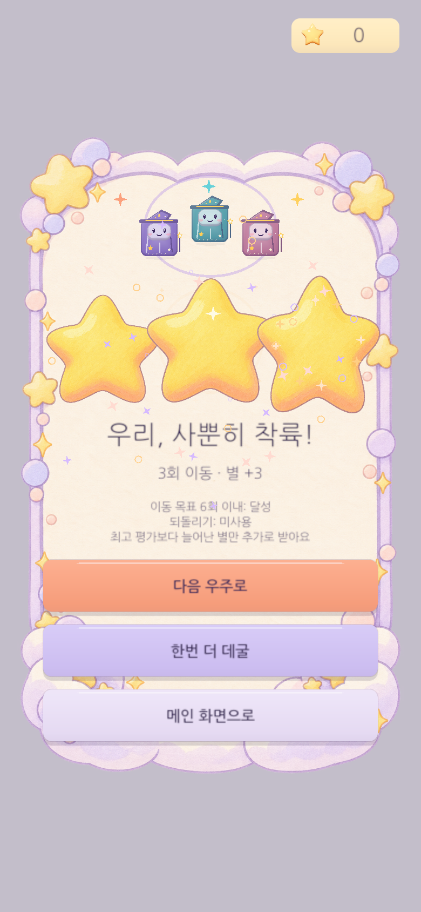
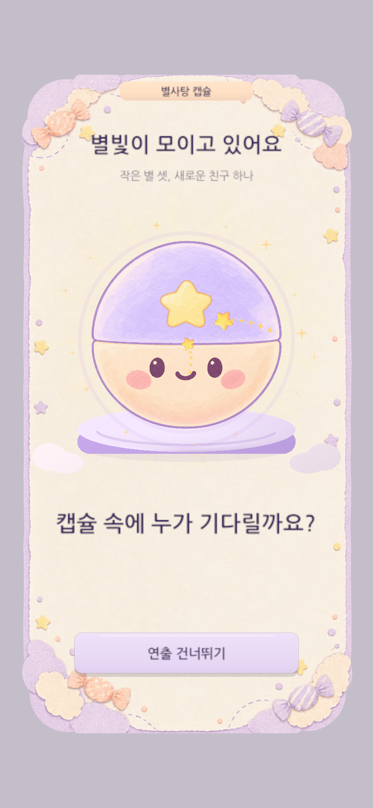
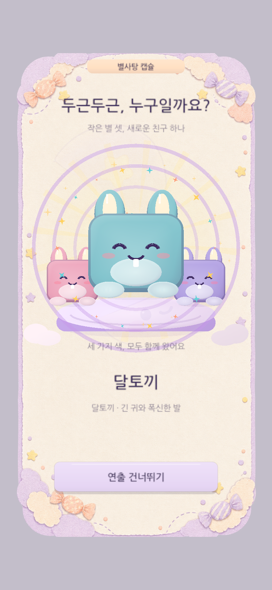

말랑궤도 · 시청각 자료
UI·System 기획서의 보조 자료 · 2026.10.31
사용자 기록을 사용하지 않은 격리 화면과 프로젝트 오디오입니다.

잔잔한 배경음악
프로젝트 원본 48초 루프. 게임에서는 낮은 볼륨 0.075로 재생.

클리어 상승음
실제 Unity 클립. 등장 3음 → 수집 3음 → 마지막 화음. 수집 시점은 설명용 예시.

별사탕 캡슐
실제 클립을 코드의 이벤트 시간대로 배열. 실시간 플레이 녹화가 아닌 청음 예시.
장면별 비교
프레임을 바꾸어 시각적 변화를 확인하세요. 장면별 렌더이며 실제 프레임 간 동작을 녹화한 영상은 아닙니다.
클리어 별

1 / 3
2 / 33 / 3캡슐

1 / 3
2 / 33 / 3화면 자료
자료 출처: 현재 프로젝트 Assets/Scripts/GravityPuzzle, Assets/Resources/GravityPuzzle, Logs의 Unity 렌더. 상세 출처·해시는 PPT 발표자 노트와 media-manifest.json에 기록했습니다.